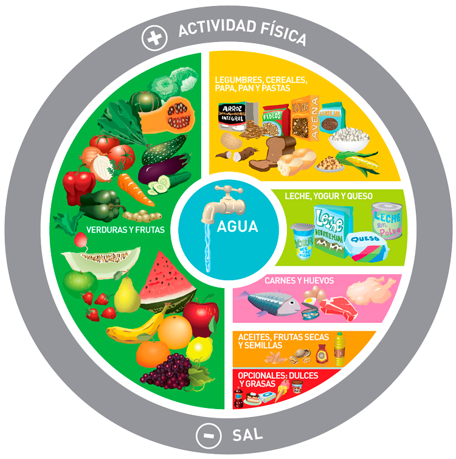

Ideas de comer
La lista es incompleta,
sólo pretende dar algunas ideas para esos días en que
el cerebro se niega a caer en la seductora y fácil idea de los fideos,
pero también se niega a pensar en una alternativa real.
Visite ésta página para conocer
sobre alimentación saludable
Cada vez que aprete un botón, cambia su contenido. Déle tranquilx!
Click Aquí para ver gráfica de alimentación balanceada
